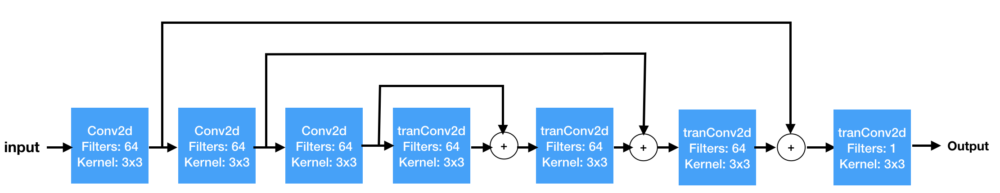

Computer Vision
super resolution image
Members
- Chayanont Eamwiwat 5830083121
- Burin Naowarat 5831034631
- Tharn Phongsavaree 5831029521
Our objectives
- Enhance image to be more aesthetic and sharpness
- Improve rocognization text in image
- Can utilize image with higher performance
Dataset
We used our generated images. Images contains a single line of text in various font family,font size, words, background colors, words colors, and position.
Dataset (con.)
- training set (30k)
- validation set (20k)
- training set (20k)
download dataset
Model 1
(SRCNN)
Model 2
(CNN)

Model 3
(Skip pooling + Convolution and Deconvolution)
Evaluation
| model | mse | mae | psnr |
| do nothing | 1330.621 | 12.0985 | 17.926 |
| SRCNN | 583.965 | 8.952 | 21.784 |
| model2 | 334.135 | 6.053 | 24.239 |
| model3 | 100.618 | 3.096 | 29.728 |
Table : All blur types in gray scale
Conclusion
The best model is model3 which has PSNR=29.728. This model outperforms because it contains more and complex layers than other model since we pass the information from lower layer to the top layer. Hence, the model3 can capture more information than other model.
Example of results (gray-scale image)
fig : left(blur) center(predict) right(original)
Example of results (rgb image)
fig : left(blur) center(predict) right(original)
current limitations
- Currently, we are still working on generated dataset since we don't have real-world data.
- We have train and test on our environmnet as font family, font size, and backgroud were limited.
- There are other techniques and models that we haven't tried.
- Still dont't have the program for common user to use.